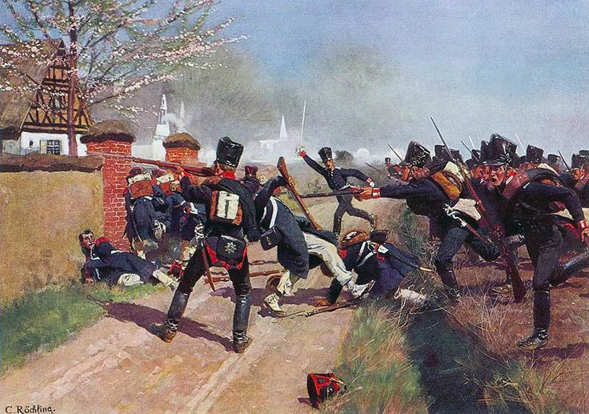
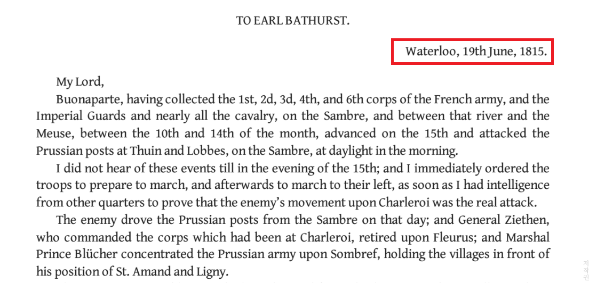
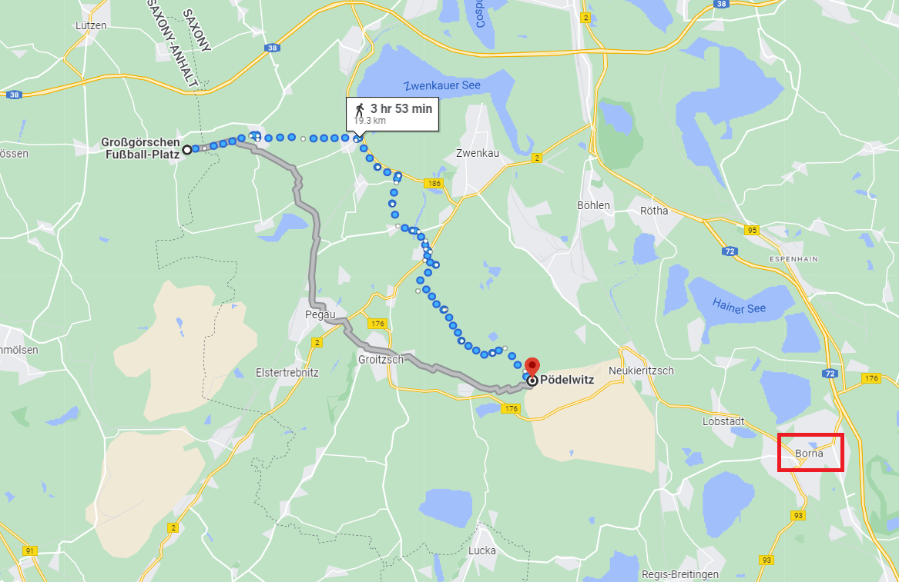
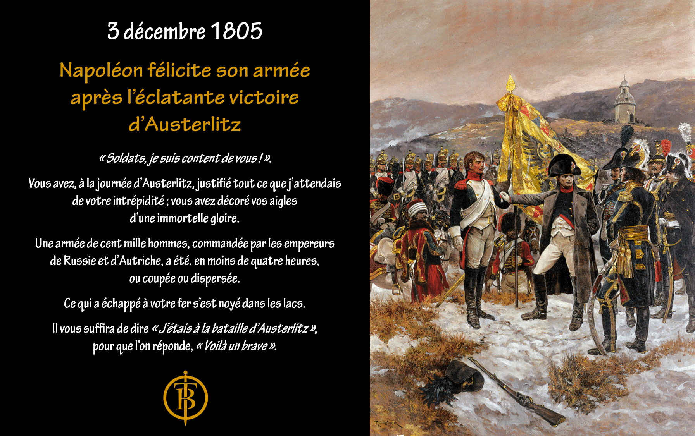

뤼첸 전투 (14) - 나폴레옹의 새 그림
게시: 2022-12-05T06:30:02+09:00
5월 2일 밤, 블뤼허의 프로이센 기병대가 4개 마을의 프랑스군 진지를 야습했을 때만 해도 나폴레옹은 현장에 있었습니다. 그러나 밤 10시가 넘자, 나폴레옹은 좀 더 안전한 후방 뤼첸으로 돌아가 숙소를 정했습니다. 이건 특별히 이례적인 일은 아니었습니다. 전투 현장은 거의 언제나 피범벅에 시신이 즐비하고 죽어가는 부상병들의 신음소리가 가득했기 때문에 거기서 총사령관이 숙소를 정하는 일은 별로 없었습니다. 사령관은 전투가 끝난 뒤에도 할 일이 매우 많았는데, 대부분 지도와 문서 작업이었습니다. 그런 것을 하기 위해서는 책상과 촛불이 꼭 필요했고, 따라서 호화롭지는 않더라도 벽과 지붕이 있어야 했습니다. 이 4개 마을 전투를 그로스괴르쉔 전투라고 부르지 않고 뤼첸 전투라고 부르는 이유도 나폴레옹의 숙소와 상관이 있습니다. 전투가 끝난 뒤에 그 전투의 이름을 지을 때, 승전한 군대의 사령관이 그날 밤 묵었던 장소의 이름을 따서 짓는 것이 당시 영국과 프랑스의 관례였기 때문이었습니다. 가령 1815년 워털루 전투도 그렇게 이름이 붙은 이유는 웰링턴이 승리한 그날 밤 저녁에 승전보를 워털루 마을에서 썼기 때문이었습니다.

(이 그림은 4개 마을에서 벌어진 5월 2일 전투의 시가전 모습을 묘사한 것입니다. 실제로 저 마을들이 저렇게 예쁘게 정돈된 동네였을 것 같지는 않습니다만, 아무튼 실제로 농가 하나 하나에서 치열한 백병전이 벌어졌기 때문에 거기서 황제가 하룻밤을 보내기는 부적절했을 것입니다.)

(웰링턴이 전투 다음날인 1815년 6월 19일 새벽에 쓴 승전보입니다. 워털루라는 지명이 보입니다.) 나폴레옹이 편한 잠자리를 위해 최전선에서 물러나 뤼첸으로 자러 갔기 때문에 연합군의 후퇴를 몰랐던 것일까요? 물론 아니었습니다. 나폴레옹은 연합군이 후퇴를 시작했다는 것을 이미 5월 3일 새벽에 이미 알고 있었습니다. 당연히 나폴레옹은 뤼첸에 도착하자마자 잠을 잔 것이 아니라 바쁘게 서류 작업에 들어갔습니다. 그는 외젠에게 명령서를 발부하여 막도날의 제11 군단 소속 제35 사단을 늦어도 새벽 4시에는 패잔병 추격에 투입하라고 지시했습니다. 그리고 놀랍게도 라이프치히가 클라이스트가 후퇴한 이후에도 무주공산으로 남아있다는 소식을 접하고는 로리스통의 제5 군단 중 1개 대대를 보내 즉각 점령하라고 지시하기도 했습니다. 그러나 고작 1개 사단으로 아직 7~8만에 달하는 연합군을 추격하여 의미있는 손상을 주는 것은 무리였습니다. 나폴레옹은 왜 전체 병력을 동원하지 않았을까요? 일단 5월 2일 뤼첸 전투에서 프랑스군이 입은 피해가 너무 컸고 병사들이 너무나 지쳤기 때문이었습니다. 나폴레옹이 이끌고 온 마인 방면군의 원탑 주력 부대였던 네의 제3 군단이 전투 한복판에서 가장 큰 타격을 입었기 때문에, 나폴레옹은 이들을 일단 뤼첸으로 이동시키고 라이프치히에 수비대로 배치하는 등 휴식과 재편성의 기회를 주어야 했습니다. 베르트랑이나 마르몽 등의 군단병들도 전날 긴 행군에 이어 나름 격렬한 포격과 시달렸는데, 대부분 미숙한 18세의 소년병들로 구성된 이 군단들을 새벽부터 두들겨 깨워 추격에 투입할 수는 없었습니다. 모든 군단장들과 사단장들이 그건 무리라고 나폴레옹에게 보고했던 것입니다. 아무리 나폴레옹이 병사들을 대포밥으로 생각하는 잔인한 사람이라고 해도 한계는 있었습니다. 그러나 가장 큰 문제는 정보가 없다는 것이었습니다. 그는 날이 밝자 다시 그로스괴르쉔의 최전선으로 돌아와 남쪽 연합군이 진을 쳤던 장소 일대를 둘러보며 적의 동태를 감시했습니다. 아직 철수하지 못한 연합군 부대들이 그대로 보였고, 저 남쪽에는 밀로라도비치의 군단이 새로 몰려와 진을 친 것도 보였습니다. 그러나 그걸로 끝이었습니다. 대체 연합군이 어디로 후퇴하고 있는지, 라이프치히에서 철수한 클라이스트의 군단은 어디로 갔는지 등등에 대한 정보가 없었습니다. 이는 역시나 기병대의 부족 때문이었습니다. 기병대가 전투 직후부터 부지런히 말을 달리며 사방에서 나폴레옹의 눈 역할을 해야 했는데, 그 숫자가 절대적으로 부족하다보니 정보를 수집하는데 시간이 너무 오래 걸렸습니다. 나폴레옹은 알렉산드르와 프리드리히 빌헬름이 사령부를 차렸던 모나쉔휘겔 등 일대를 돌아보며 외젠이 동쪽 일대에서 정보를 수집해서 보고할 때까지 몇 시간을 허송세월해야 했습니다. 마침내 외젠의 보고서가 들어온 뒤에도 나폴레옹이 할 수 있는 것이 많지 않았습니다. 역시 기병대가 없기 때문이었습니다. 그는 연합군의 후퇴 방향인 페가우와 프레델 쪽으로 추격을 지시했지만, 지친 보병 사단들은 그야말로 느릿느릿 출발 준비를 했고 느릿느릿 행군했습니다. 이렇게 느리게 움직인 덕분에 좋았던 것은 러시아군 후위대를 따라잡지 못해 추가적인 전투가 없었다는 점이었습니다. 전날 상대적으로 가장 한 일이 없었던 마르몽의 제6 군단조차도 엘스터 강을 건넌 것으로 만족하고는 엘스터 강 바로 동쪽 마을인 룁니츠-베네비츠(Löbnitz–Bennewitz)에 퍼져 버렸고, 약 2천에 달하는 제1 기병군단과 함께 막도날의 제11 군단을 이끌고 추격에 나선 외젠이 그나마 푀델비츠(Pödelwitz)까지 진격했는데, 이는 전투 현장이었던 그로스괴르쉔으로부터 프로이센군의 퇴각 집결지인 보르나(Borna)까지의 거리에서 중간 정도에 있는 곳이었습니다.

(푀델비츠(Pödelwitz)의 위치입니다. 외젠의 군단이 지쳐서 여기까지 밖에 못 왔다고 할 수도 있지만, 거의 20km를 진격한 것으로서 전진하는 군대로서는 그다지 나쁘지 않는 하루 행군거리입니다. 특히 거의 정오 이후에나 추격을 시작했다는 것을 고려하면 외젠의 군단들은 나름 최선을 다해 매우 강행군을 한 셈입니다.)
프랑스군의 사상자는 끔찍하게 많았습니다. 나폴레옹이 둘러본 전투 현장에는 적보다는 프랑스군의 시체와 부상자들이 즐비했는데, 이는 프로이센군이 상당히 많은 구급마차를 준비하여 부상병들을 버리지 않고 거의 대부분 후송했기 때문이었습니다. 정확한 집계는 불가능했지만 프랑스군이 연합군보다 더 많은 사상자를 낸 것으로 보였습니다. 그러나 전투의 승패는 어느 쪽이 더 많이 쓰러졌느냐로 결정되는 것이 아니라, 누가 전투 현장에 두 다리로 버티고 서있는냐로 결정되는 법이었습니다. 나폴레옹은 이렇게 값비싸게 얻은 승리를 120% 활용하기로 마음을 먹었습니다. 이건 모스크바에서 처참하게 후퇴한 이후 그가 재기했음을 알리는 첫 승리였으니 더욱 그럴만 했습니다. 초조했던 나폴레옹은 그로스괴르쉔에서 아직 격렬한 전투가 벌어지고 있던 전날 저녁, 파리는 물론 오스트리아 빈과 폴란드 크라쿠프(Krakow), 심지어 오스만 투르크의 이스탄불에까지도 그가 뤼첸 전투에서 러시아군과 프로이센군을 격파했다고 승전보를 발송할 정도였습니다. 그리고 이 승리를 거둔 주역인 18세의 소년병들에게도 치하의 말을 잊지 않았습니다. 이 소년병들에 대해 나폴레옹의 부하 원수들은 원래부터 걱정이 많았으나 이들 대부분은 생각보다 잘 싸워준 것이 사실이었습니다. 그리고 이 소년병들의 사기를 더 북돋울 수 있는 가장 좋은 것은 승전과 그에 따른 칭찬이었습니다. 나폴레옹은 전투 바로 다음날인 5월 3일 포고문을 발표하여 참전 병사들을 치하했는데, 그 첫 문장은 "Soldats ! Je suis content de vous." (병사들이여! 짐은 제군들에게 만족한다)라고 시작했는데, 이는 바로 1805년 12월 아우스테를리츠 전투 직후 발표한 포고문에서 썼던 바로 그 문장이었습니다.

(이 그림 속 문장은 1805년 아우스테를리츠 직후에 발표된 것입니다.) 병사들을 격려하기 위해 쓴 이 포고문에서 나폴레옹은 이 전쟁이 유럽의 문명국들과 야만스러운 러시아와의 싸움이라는 것을 강조했습니다. 그의 포고문은 이렇게 끝납니다. Dans une seule journée, vous avez déjoué tous ces complots parricides. Nous rejetterons ces Tartares dans leur affreux climat, qu’ils ne doivent pas franchir. Qu’ils restent dans leurs déserts glacés, séjour d’esclavage, de barbarie et de corruption, où l’homme est ravalé à l’égal de la brute ! Vous avez bien mérité de l’Europe civilisée. Soldats, l’Italie, la France, l’Allemagne vous rendent des actions de grâces ! "단 하룻만에 그대들은 이 모든 극악한 음모들을 좌절시켰다. 우리는 이 타타르 야만인들을 그들 고향의 그 소름끼치는 날씨 속으로 격퇴할 것이고, 그들은 거기를 벗어나지 못할 것이다. 그들은 그 얼음 사막에서 노예제와 야만과 부패 속에서 짐승처럼 살게 될 것이다! 그대들은 문명화된 유럽 세계에 큰 공헌을 했다. 병사들이여, 이탈리아와 프랑스, 독일이 그대들에게 감사를 표한다!" 나폴레옹의 포고문은 프리드리히 빌헬름이 뻘쯤할 정도로 프로이센에 대해서는 언급을 하지 않고 오로지 러시아에 대한 비난만 퍼부었습니다. 원래부터 나폴레옹은 유럽 세계를 프랑스와 러시아가 양분하는 것으로 큰 그림을 그렸었고, 이제 그 그림이 깨진 마당에 유럽 전체가 야만스러운 러시아와 싸워야 한다는 식으로 새 그림을 그리려고 했던 것입니다. 이건 분명히 프로이센과 러시아 사이를 이간질하고, 더 나아가 오스트리아가 연합군에 가담하는 것을 막고자 하는 의도였습니다. 그리고 나폴레옹이 새 그림의 구도를 그렇게 잡은 것은 결코 터무니 없는 것이 아니었습니다. 프로이센군과 러시아군 사이에서는 갈등이 점점 커지고 있었습니다. Source : The Life of Napoleon Bonaparte, by William Milligan Sloane Napoleon and the Struggle for Germany, by Leggiere, Michael V
https://rickydphillipsauthor.wordpress.com/2016/05/02/the-battle-of-lutzen-1813/ https://theatrum-belli.com/chronique-culturelle-du-3-decembre/ https://www.napoleon-histoire.com/correspondance-de-napoleon-mai-1813/2/